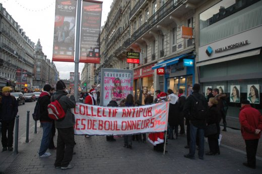
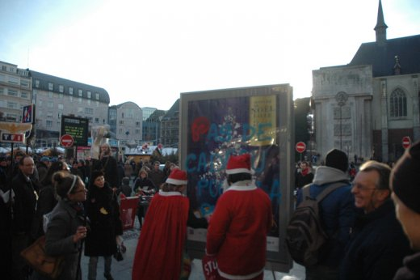
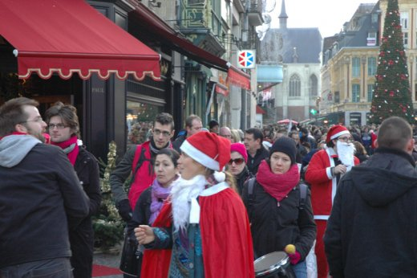
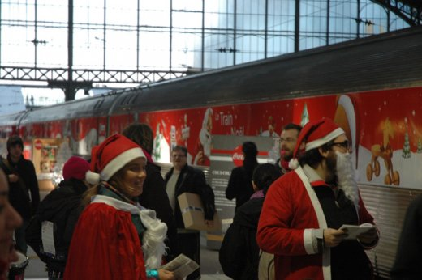
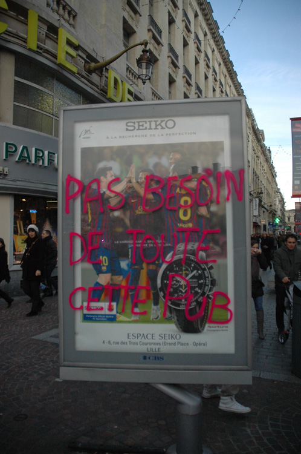

| |
Site dédié à la publication d'informations communiquées par le Collectif des déboulonneurs. En aucun cas ce site n'appelle à des actions illégales. | |
 |
||
|
Accueil du site > Lille > [Lille] Le Père-Noël est un barbouilleur

Compte rendu de l’action du 17 décembre 2011Heure de l’action : 15h - 17h Lieu : Place Rihour, à l’entrée du Marché de Noël, rue Faidherbe et la Gare Lille-Flandres Nombre de panneaux touchés : 4 sucettes CBS, un 2m2 mural JCD Slogans : Pas de cadeau pour la Pub, Je consomme je me consume, Pas besoin de toute cette pub, Noël sans Pub... Une publicité pour du parfum "LOVERDOSE" a permis le détournement : "L’overdose de publicité nuit gravement à tous" Nombre d’activistes : Une vingtaine Nombre approximatif de passants-spectateurs : grande foule à l’entrée du Marché de Noël, les barbouillages étaient intacts lundi midi, sauf celui du panneau JCD (ils sont forts chez JCD, ils nettoient même le dimanche) Nombre de journalistes présents : La Voix du Nord, 20minutes Attitude de la police : Appelés à grands cris par l’Eglise de la Très Sainte Consommation, les policiers sont passés en nous ignorant. A la gare, il s’est passé un bon moment où les agents SNCF rétorquaient aux policiers : "S’ils ont l’autorisation de la SNCF, on ne doit pas les faire partir". Seulement après ont-ils compris que nous n’étions pas au programme des festivités et ils nous ont alors demandé de sortir de la gare. Retombées presse :
Portfolio : Toutes les photos 
Compte rendu détailléPour cette action, le rendez-vous était fixé à 15h place Rihour à Lille, à l’entrée de la rue Jean Roisin devant la pharmacie Rihour qui fait l’angle entre la rue de la Bourse et la rue Jean Roisin. A 15h15 nous étions une vingtaine dont une demi-douzaine de musiciens avec leurs instruments à percussion. L’action était coordonnée avec celle de l’Eglise de la Très Sainte Consommation qui nous a rejoint en parodiant la nécessité d’acheter pour faire marcher l’économie et en faisant semblant de dénoncer le groupe des déboulonneurs pour leurs actions illégales. Le Père-Noël et deux autres barbouilleuses (dont la Mère-Noël) avaient en effet commencé à barbouiller le panneau CBS déroulant de 2 m² qui se trouve à proximité de l’entrée de la pharmacie tandis que les explications de la raison de notre action étaient données au mégaphone. L’intervention du groupe des « fidèles » de la consommation a duré une petite demi-heure, amusant visiblement beaucoup les badauds qui nous observaient. Des policiers sont passés à proximité de notre groupe. Le Père-Noël barbouilleur leur a montré de loin sa carte d’identité, mais les policiers ont décidé de ne pas intervenir. Les deux groupes, celui de la Très Sainte Consommation d’une part et celui des déboulonneurs d’autre part ont ensuite poursuivi leurs itinéraires propres tandis que le notre s’est engagé rue Jean Roisin pour barbouiller le panneau mural de 2m² déroulant (et illégal) de cette rue. 
Nous sommes partis ensuite en musique en direction de la rue Faidherbe ou nous avons poursuivi notre action de barbouillage en commençant par le panneau déroulant 2m² CBS théâtre de l’Opéra. C’est alors qu’un monsieur du troisième âge s’est offusqué de notre comportement et nous a invectivé en nous répétant que nous n’avons pas le droit de barbouiller du mobilier urbain. Il est resté sur place un bon moment en ne décolérant pas malgré les explications qui lui ont été fournies. Lorsque nous nous sommes rapprochés du second panneau déroulant 2m² CBS de la rue Faidherbe (celui situé à proximité de la gare de Lille Flandres), un autre monsieur nous a fait part de son indignation. Mais celui-ci a compris la raison d’être de notre action et s’est montré moins buté que le premier. Après ce barbouillage, nous nous sommes rendus dans la gare de Lille Flandres où nous nous sommes stationnés près du « train de noël » publicitaire de Coca Cola. Le groupe des musiciens s’en est donné à cœur joie tandis que le reste du groupe distribuait des tracts au public. Initialement les responsables de la gare interrogés par la police ferroviaire pensaient que nous avions l’autorisation de venir nous exprimer sur le quai de gare avec les instruments à percussion. Lorsqu’ils ont compris que nous n’étions pas munis de cette autorisation (ce qui a bien pris 15 à 20 mn), ils ont permis aux policiers de nous aborder. Ceux-ci se sont finalement montrés compréhensifs, mais nous ont accompagnés jusqu’à la sortie de la gare. L’action a duré presque 2 heures au cours desquelles des centaines de tracts ont été distribués. Elle s’est déroulée dans de bonnes conditions en dépit du froid de ce début d’hiver. Il n’y a pas eu d’interpellation avec garde à vue au poste de police. 
Communiqué de presseLe Père Noël en guerre contre la publicité Accompagnés de musiciens et de nombreux soutiens, le Père Noël et les déboulonneurs lillois sont de nouveau entrés en désobéissance civile ce samedi après-midi. De l’entrée du marché de Noël jusqu’à la gare, ils ont barbouillé les panneaux publicitaires qui polluent le centre ville. Cinq panneaux ont été barbouillés à la bombe avec les messages « pas de cadeau pour la pub », « je consomme, je me consume », « Noël sans pub »... Les déboulonneurs ont terminé leur action en distribuant des tracts dans la gare Lille-Flandres. Le « train de Noël » stationné voie 9 n’était qu’une publicité géante pour une marque de soda. Même si la publicité veut nous le faire croire, Noël n’appartient pas à une multinationale ! Cette action de désobéissance civile non-violente a reçu un bon accueil de la part des passants. A une semaine de Noël, beaucoup se disent saturés par la publicité et nous remercient pour notre action. Lors de cette action, les barbouilleurs et le Père Noël n’ont pas été inquiétés par les forces de l’ordre. Inlassablement et jusqu’à gain de cause, c’est-à-dire jusqu’à la réduction significative de la publicité dans l’espace public, les déboulonneurs continueront d’agir. CP du 17/12/2011

|
|
Site utilisant SPIP - Hébergement Ouvaton
|